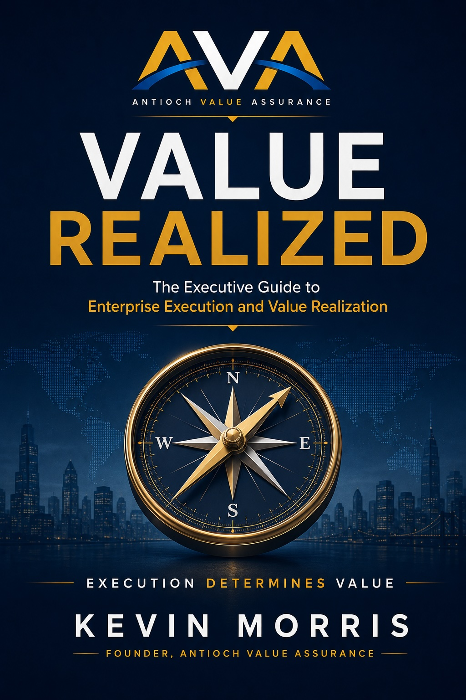

Why value is lost
Understand how weak planning, limited capacity, fragmented accountability, slow decisions, and execution gaps create value leakage.

Available in Kindle and paperback editions.
The Executive Guide to Enterprise Execution
The Executive Guide to Enterprise Execution and Value Realization
Organizations do not create value simply by approving the right strategy. Value is realized only when strategy is translated into disciplined execution, sustained leadership, effective governance, and measurable business outcomes.
Value Realized provides executives, deal leaders, transformation leaders, and project sponsors with a practical framework for protecting enterprise value from opportunity framing through benefits realization.
The central proposition
Enterprise value is not realized when a strategy is approved. It is realized when the organization delivers the outcomes that strategy promised.
About the book
Every year, organizations commit significant capital, leadership attention, and organizational capacity to acquisitions, transformations, technology programs, strategic initiatives, and major projects.
Yet many of these investments fail to deliver their intended value—not because the strategy was necessarily wrong, but because the enterprise could not translate that strategy into coordinated, measurable, and sustainable execution.
Value Realized examines where value is lost, why execution systems break down, and what leaders can do to maintain alignment between strategic intent, execution performance, and business outcomes.
What you will learn
The book connects strategy, governance, leadership, technology, transition, and benefits realization into one integrated management perspective.
Understand how weak planning, limited capacity, fragmented accountability, slow decisions, and execution gaps create value leakage.
Evaluate whether the organization has the leadership, people, technology, governance, and operational capacity required to succeed.
Translate strategic intent into integrated plans, accountable workstreams, measurable outcomes, and effective decision-making.
Create clarity, alignment, accountability, and decision velocity throughout complex enterprise initiatives.
Address technology dependencies, data, systems, cybersecurity, integration, and digital enablement as business value considerations.
Move beyond project completion by validating, measuring, protecting, and sustaining the outcomes promised by the original investment.
The AVA perspective
The book introduces an integrated structure for understanding how enterprise value is created, protected, realized, and sustained.
Readiness determines success.
Execution determines value.
Leadership determines execution.
Technology enables value.
Transition determines sustainability.
Across the entire lifecycle
Continuous value assurance connects strategic intent, execution performance, risk, decisions, benefits, and measurable business outcomes from opportunity framing through benefits realization.
Who should read this book
Executives and business leaders
M&A, integration, and separation leaders
Transformation and program leaders
Project sponsors and steering committees
Technology, finance, HR, and operations leaders
Advisors responsible for enterprise outcomes
Begin the journey
Discover a practical approach to aligning strategy, execution, leadership, technology, transition, and benefits realization.